Archives
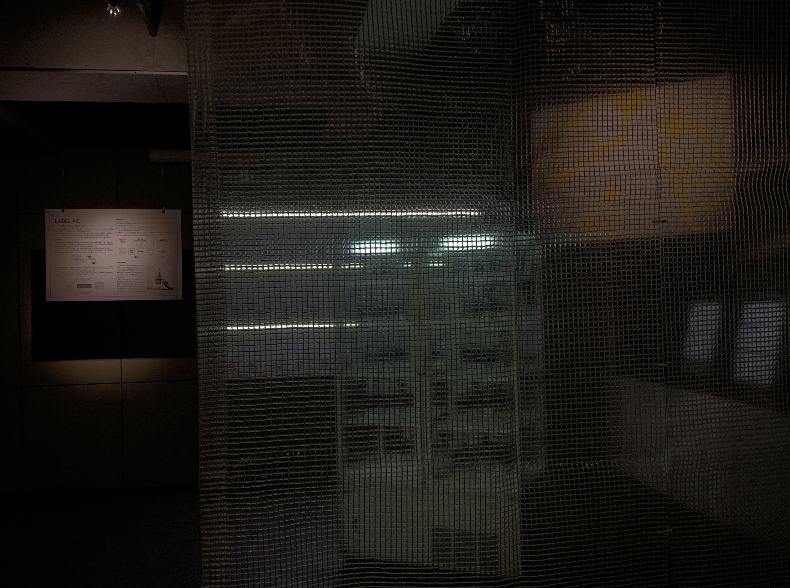
2025.10.25
Technical support for TECH BIAS 2 - 分類されない「わたし」展, Tokyo University × Sony Group, Creative Futurists Showcase
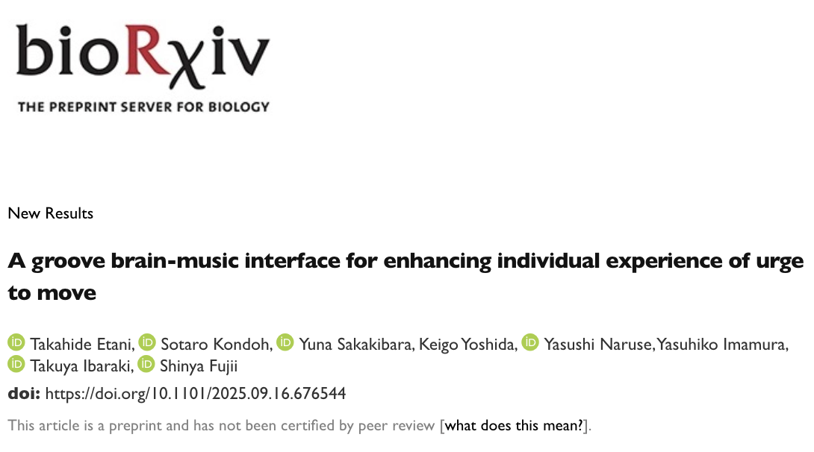
2025.10.11
Paper published on bioRXiv: A groove brain-music interface for enhancing individual experience of urge to move
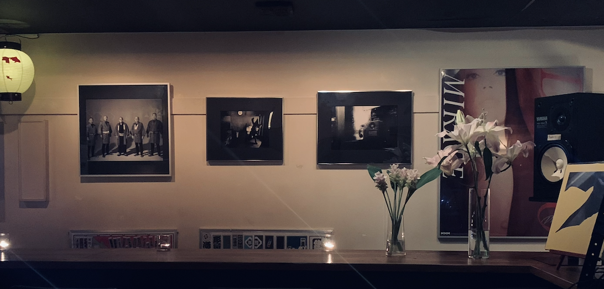
2025.07.12
DJ at Bar Kingyo

2025.06.16
Audio Visual Performance at Sónar+D 2025 AI Performance Playground, an AI & Music Hacklab powered by S+T+ARTS.
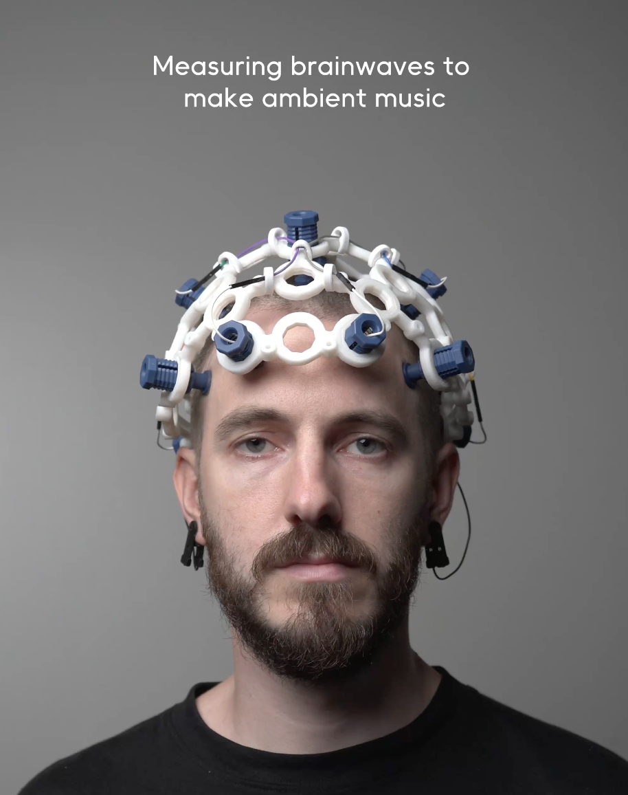
2025.06.02 - Now
Making PR video for Neutone Inc.
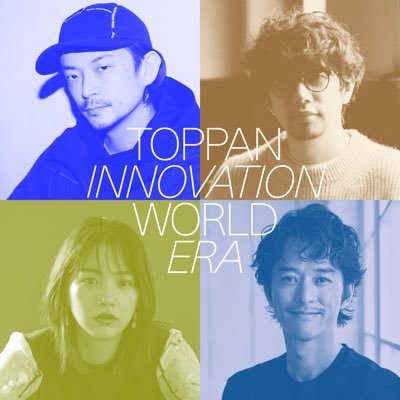
2025.06.01
Appear in J-WAVE TOPPAN INNOVATION WORLD ERA【Daito Manabe×Keigo Yoshida】Radio
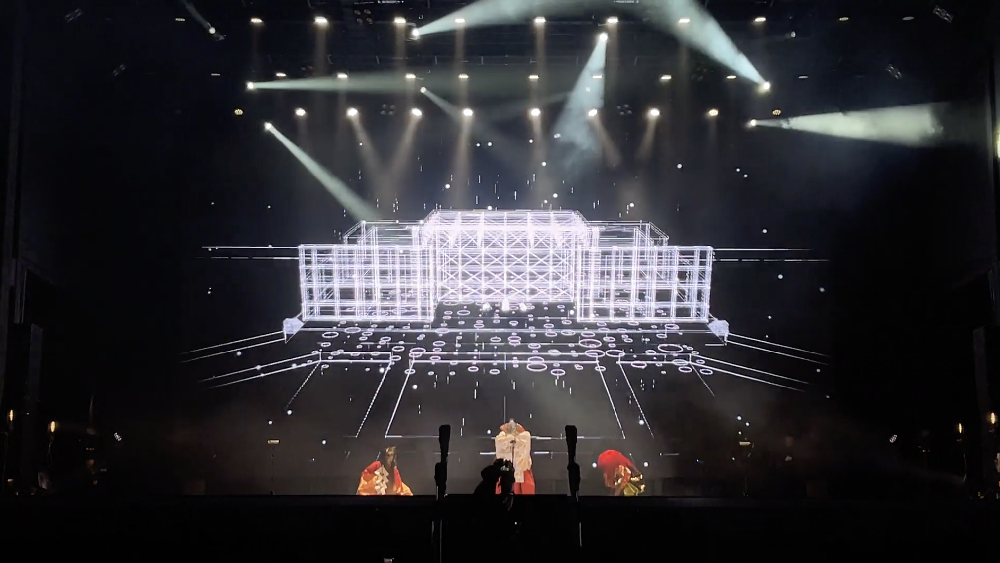
2025.05.27
Visual Programming and Software Engineering for FUTURE 能-NOH STAGE at Expo 2025 Osaka, Kansai, Japan
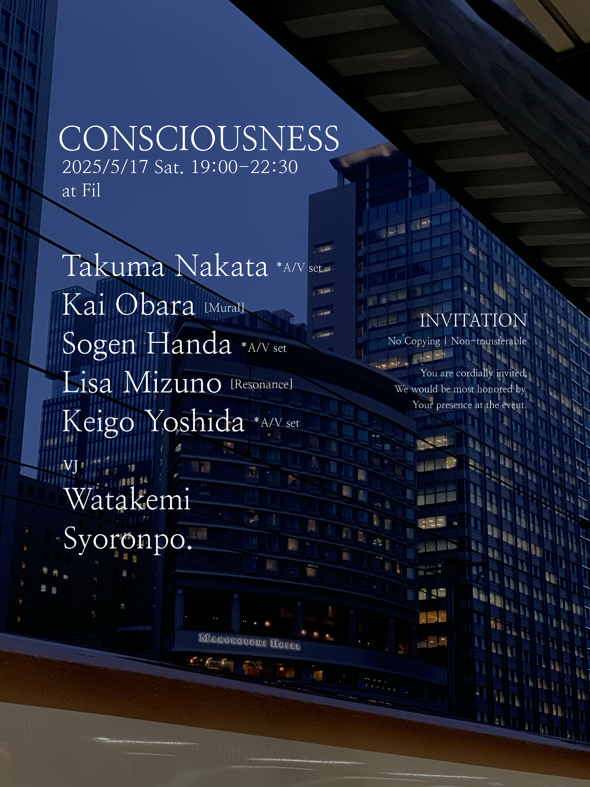
2025.05.17
Organaizing A/V, DJ event "Concisousness" at Fil

2025.02.10
VJ at Radio Sakamoto Uday for SE SO NEON and TOWA TEI

2025.01.24
liberated frequencies A/V performance at Flying Tokyo the final presentation

2025.01.24
liberated frequencies installation at Flying Tokyo the final presentation

2024.12.08
Reservoir A/V performance at Tedx KeioU conference
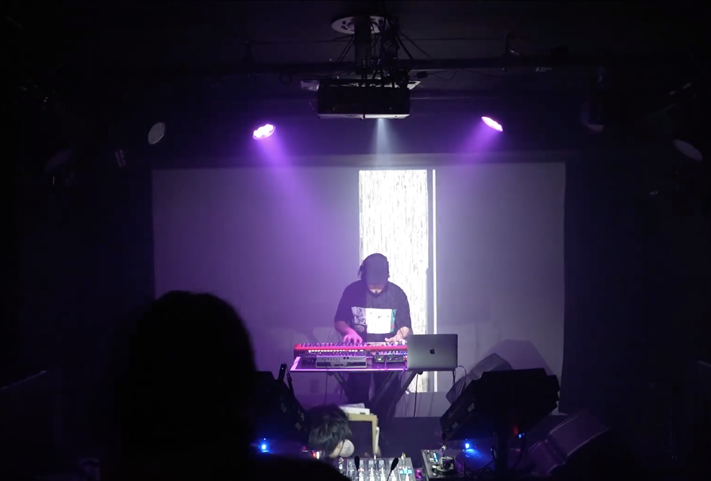
2024.09.04
VJ at Kagurane Tokyo
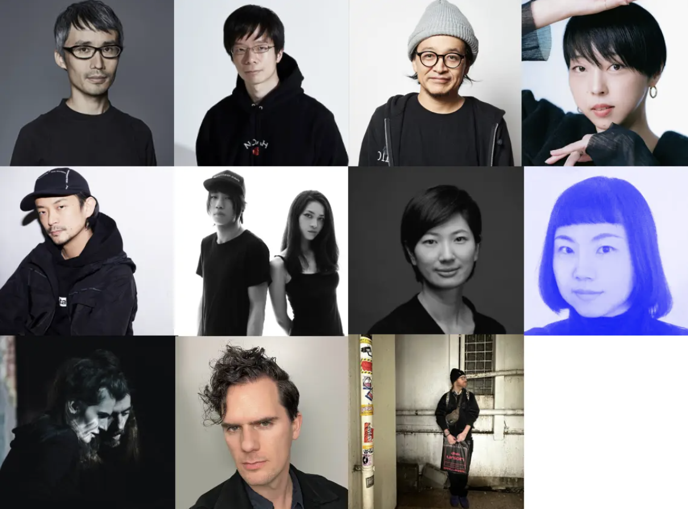
2024.06.17
Flying Tokyo 2024

2024.06.13
Relationships between 40-Hz Auditory Steady-State Response and Musical Training at The Neurosciences and Music – VIII 2024 in Helsinki, Finland

2024.05.27
DJ at Zero Tokyo R bar

2024.05.09
DJ at Mei Mei
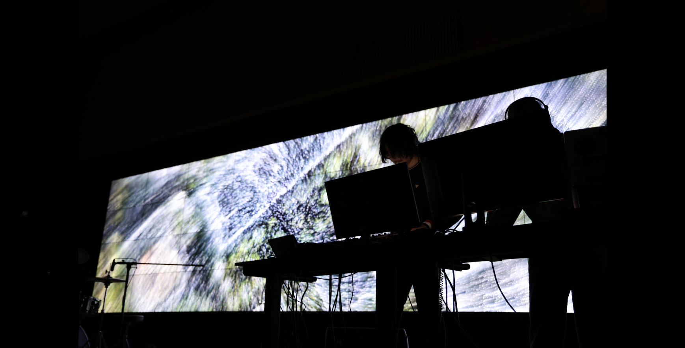
2024.04.11
Environment and Information studies 2024
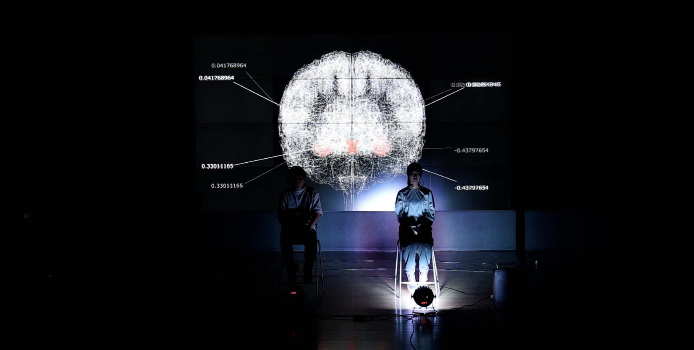
2024.01.21
Artificial Heart Brain Waves
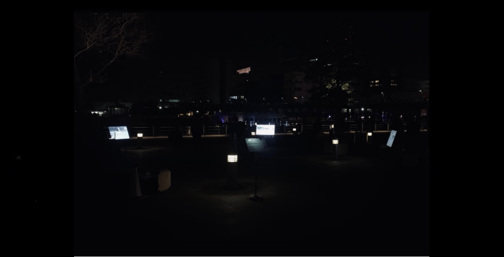
2023.12.10
Re:Imagine at ZOU-NO-HANA FUTURE SCAPE PROJECT
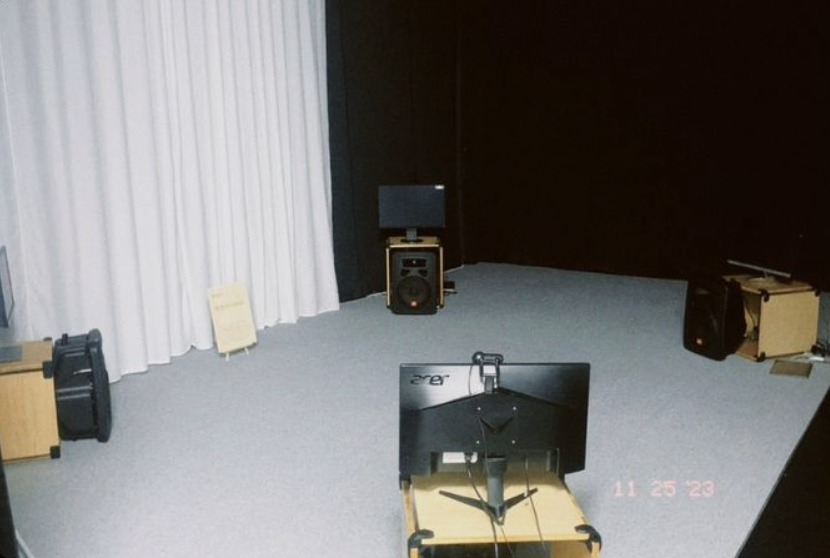
2023.11.25
Re:Imagine at Open research forum & 万学博覧会

2023.09.09
Tsukuba International Conference 2023 session performance

2023.09.08
Hanamizuki [Reworked] feat. 一青窈 / Yo Hitoto

2023.08.24
Muscle Synergy of A Lower Limb in Drummers'Dystonia: A Case Study. at ICMPC and APSCOM

2023.04.29
DJ at Spincoaster music bar
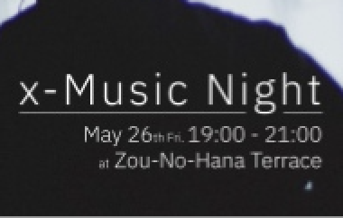
2023.05.01
DJ at Zou-No-Hana terrace
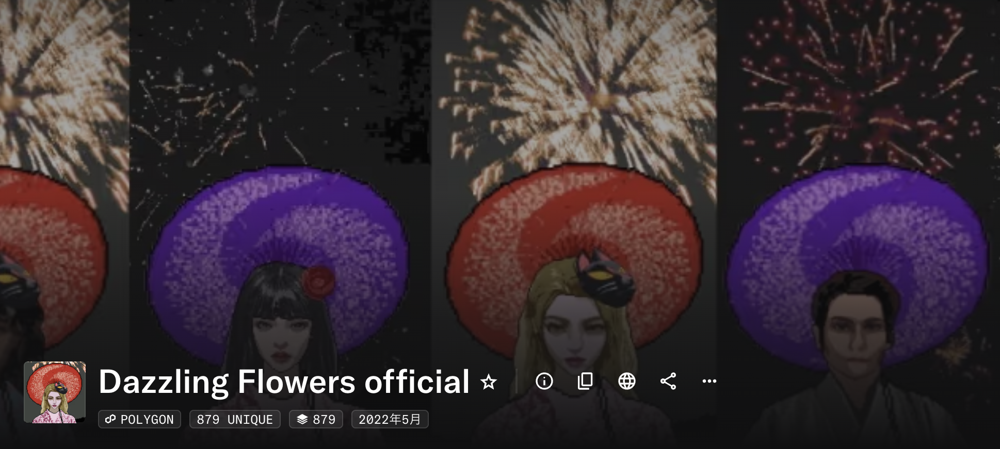
2022.05.22
879 of Dazzling Flowers

2021.05.01
円環 - circle of unconsciousness
And more